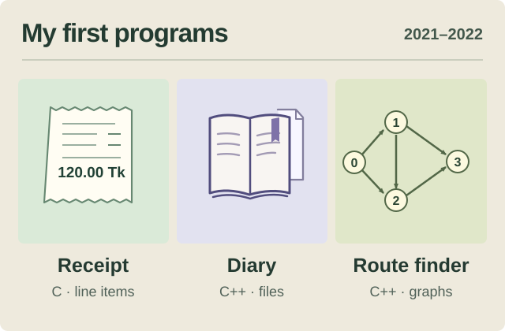
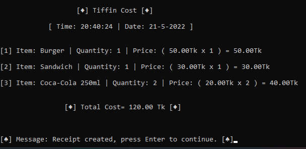
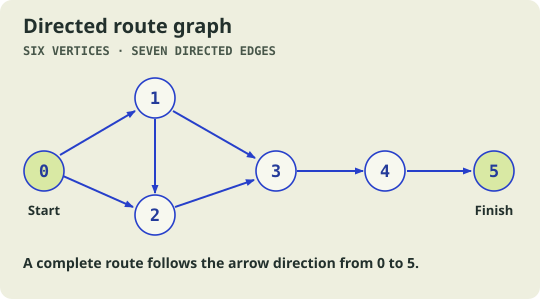

First year · 2021–2022
First-year C & C++ projects
In my first year at university, I chose three problems I wanted to solve and wrote the C and C++ programs myself, by hand, without AI assistance.
- Period
- 2021–2022 · First year
- My role
- Individual projects from my own ideas
- Languages
- C and C++


Enlarge imageThree everyday problems
I wanted to print a receipt from a shopping list, keep a diary entry after closing the program, and find different routes between places in Dhaka. Each idea made me choose a different way to represent the data.
Inside each program
Step 1 of 3
Add up a receipt in C
I stored each item’s name, quantity, and unit price in a structure. The program multiplies quantity by price, adds the line totals, and can write the finished receipt to a text file.


Enlarge imageStep 2 of 3
Keep a dated diary in C++
I used file streams so an entry would still be there the next time the program opened. The menu lets me write, retrieve, or edit the title, date, and text.
- WriteEnter a title, date, and note.
- SaveWrite the entry to its file.
- Retrieve or editRead the saved entry back.
Step 3 of 3
Find paths through a directed graph
I represented six places as vertices and the available connections as one-way edges. My recursive search marks the vertices on the current path, then backtracks to look for another route.
0 → 1 → 2 → 3 → 4 → 5
0 → 1 → 3 → 4 → 5
0 → 2 → 3 → 4 → 5

Enlarge imageWhy the direction matters
The arrows in my graph lead from Permanent Campus to the Research Building. Starting at the Research Building gives a different answer because there is no outgoing edge there.
I left an index uninitialised in the original path-display routine. The program could handle a search with no route, yet crash when it tried to print a valid one. Setting the index to zero before printing produces the three routes shown above.
What these programs taught me
The receipt made me work carefully with quantities and totals. The diary introduced persistence, and the route finder showed me how recursion uses and restores state. I wrote the receipt and diary for a Windows console, where both use Windows-specific headers.
Contact
Connect with me on LinkedIn or find more of my work on GitHub.